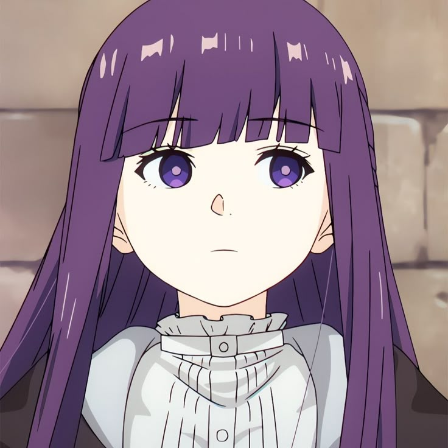

Stats:
Tier: 10-B physically; Low 7-C with magic
Name: Fern
Gender: Female
Age: 17-20
Classification: First-class Mage
Tier: 10-B physically; Low 7-C with magic
Name: Fern
Gender: Female
Age: 17-20
Classification: First-class Mage
Short Description:
Fern is a young, stoic human mage and Frieren's apprentice in Frieren: Beyond Journey's End. A war orphan raised by the priest Heiter, she joins Frieren on her new journey after Heiter's death and is a skilled, diligent, and responsible companion who often acts as the more mature and organized member of the trio
Fern is a young, stoic human mage and Frieren's apprentice in Frieren: Beyond Journey's End. A war orphan raised by the priest Heiter, she joins Frieren on her new journey after Heiter's death and is a skilled, diligent, and responsible companion who often acts as the more mature and organized member of the trio